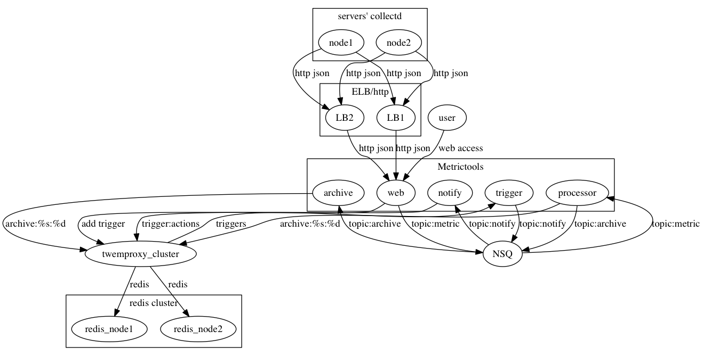

Introducing metrictools
It’s distributed system monitoring solution. It support collectd’s json format data.

Metrictools Subsystem
process
processor module read collectd json data from nsq, parse json and store data into redis.
it also check metrics’ archive time, and send metrics’ name to archive.
processor scan all records in redis which match trigger:*, and send them to metricstatistic
Date Flow
collectd -> webapi -> nsq -> process -> redis
archive
archive read metric name from nsq, compress and remove old data.
Date Flow
processor -> nsq -> archive -> redis
statistic
statistic read trigger from nsq, then calculate triggers’ expression.
It also use etsy/skyline algorithms to check data. If skyline algorithms return true, send data to metricnotify.
Date Flow
# calculate expression
processor -> nsq -> archive -> redis
# skyline
redis -> archive -> nsq -> notify
webapi
webapi is a web api, it provide data from redis.
Date Flow
webapi <-> redis
See also (github.com/datastream/metricweb)
notify
notify read data, and send data via email, http etc.
Date Flow
statistic -> nsq -> notify -> email/http/im etc.
All these tools communicate data via nsq.
How to Setup
Require
- collectd v4.8+ (write_http plugin)
- nsq
- redis (optional twemproxy)
collectd
collectd runs on every node, and send data to nsq api via http.
<Plugin write_http>
<URL "http://nsq_node:4151/put?topic=metric">
Format "JSON"
User "instance_name"
Password "user_token"
</URL>
</Plugin>
nsq
redis
on debian
apt-get install redis-server
service redis-server start
on freebsd
cd /usr/ports/databases/redis;make install
service redis-server start
on mac ox x
brew install redis-server
/usr/local/bin/redis-server
data struct in redis
SMEMBERS hosts
1) 192.169.21.1
2) 192.169.21.2
...
SMEMBERS 192.169.21.1
1) 192.169.21.2_cpu7_interrupt
2) 192.169.21.2_cpu27_steal
...
HGETALL 192.169.21.2_interface_eth2.if_errors.rx
1) "value"
2) "0"
3) "timestamp"
4) "1392798179"
5) "rate_value"
6) "0"
7) "ttl"
8) "10800"
9) "archivetime"
10) "1392797701"
11) "5mins"
12) "1390006167"
13) "10mins"
14) "1391983767"
15) "15mins"
16) "1392192867"
SMEMBERS triggers
1) 192.169.21.2_cpu7_interrupt
2) 192.169.21.2_cpu2_interrupt
3) 192.169.21.2_cpu2_interrupt+192.169.21.2_cpu5_interrupt
ZRANGEBYSCORE archive:192.169.21.2_cpu2_interrupt
1) "1392192867:1"
2) "1392192927:1"
...
ZRANGEBYSCORE archive:192.169.21.2_cpu2_interrupt+192.169.21.2_cpu5_interrupt
1) "1392192867:4"
2) "1392192927:4"
SMEMBERS 192.169.21.2_cpu2_interrupt+192.169.21.2_cpu5_interrupt:actions
1) "uri"
2) "mailto:xxx@xxx.com"
3) "updated_time"
4) "1390006167"
5) "repeat"
6) "3"
7) "count"
8) "0"
twemproxy
metrictools support twemproxy now.
metrictools
git clone github.com/datastream/metrictools
cd metrictools;make
vim metrictools.json
{
"nsqd_addr":"127.0.0.1:4151",
"lookupd_addresses":["127.0.0.1:4160"],
"metric_topic":"metric",
"metric_channel":"metric_ch",
"trigger_topic":"trigger",
"trigger_channel":"trigger_ch",
"archive_topic":"archive",
"archive_channel":"archive_ch",
"notify_topic":"notify",
"notify_channel":"notify_ch",
"notify_email_address":"notify@test.org"
"redis_server":"127.0.0.1:6379",
"full_duration":86400,
"consensus":6,
"maxinflight":200,
"listen_address":"127.0.0.1:1234",
"modes":["archive", "notify", "process", "statistic", "webapi"]
}
Run metrictools
./metrictools -c metrictools.json
Todo
- improve anomalous metric detect algorithms
- improve data record, reduce redis data size